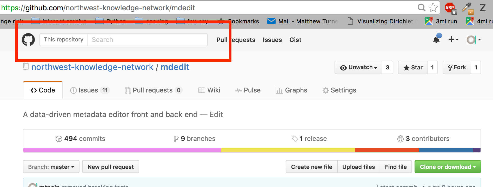
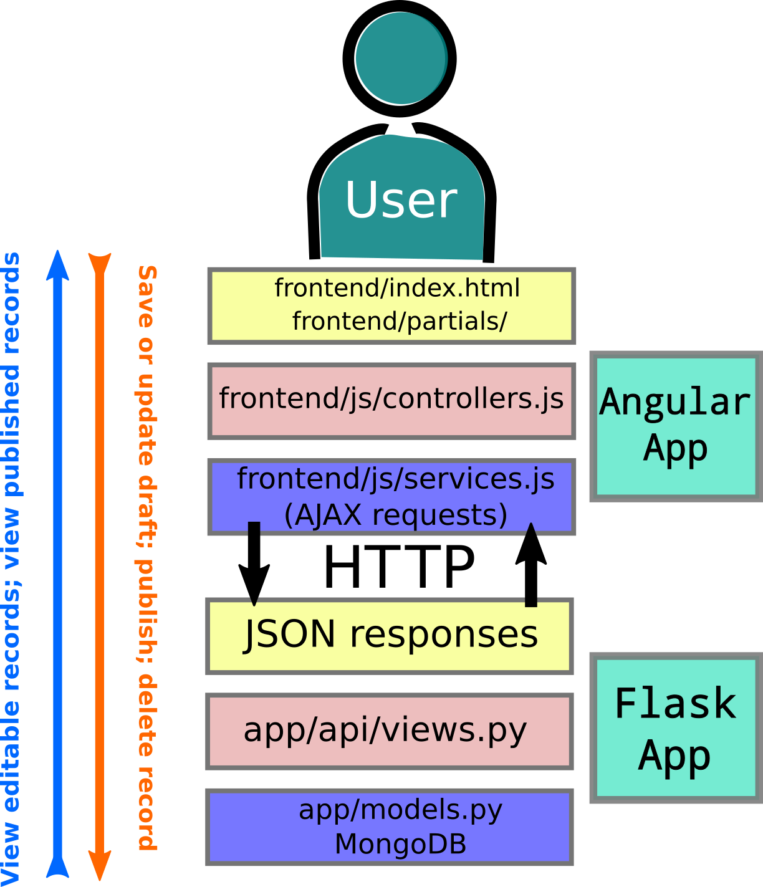
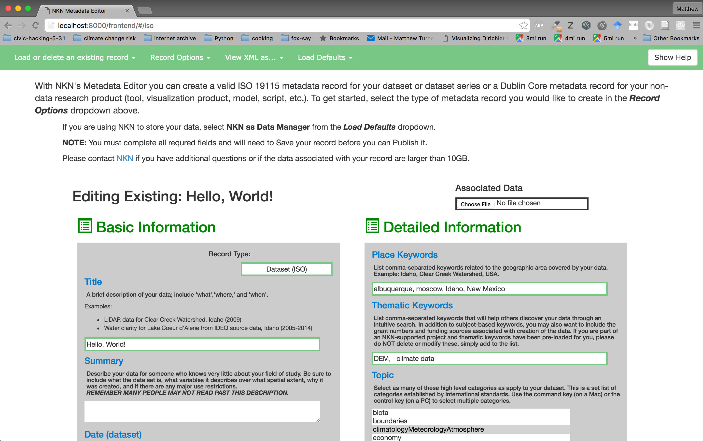
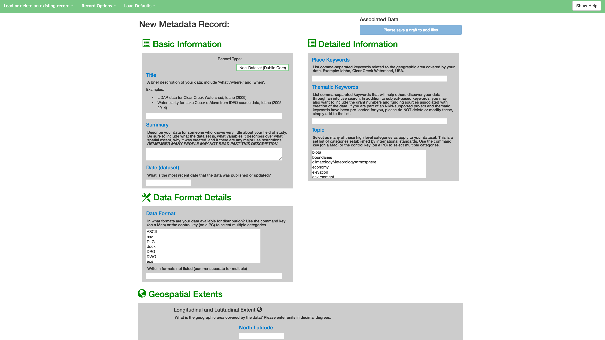

software¶
The best way to read this part of the documentation is to have a browser tab open to the mdedit GitHub repository as we will reference this throughout. When on our repository, GitHub make searching the repository easy using the search bar at the top of the screen, shown below
There is almost 3 times as much javascript as there is Python code in this project. It is true that the developers who initiated the mdedit project had very little experience with web technologies before this, and while this might cause some of the bloat on the javascript side, the reason is mostly that user interaction takes a lot of work to get even half right.
The metadata editor provides a stack of software that provides read/write access to a MongoDB database that serves a web app written in the Flask web micro-framework written in Python. This Flask app provides a REST API a client can use to create, update, delete, and publish datasets within the NKN Portal.
The front end of the metadata editor is the original client and consumer of the backend data server. This could be considered (and maybe should be separated in the future) an independent web application. Here, the HTTP responses from the data server are the most raw form of the data. We use the Angular framework to reveal that data to the end user in the browser in a variety of ways, as well as handle user input. We use Bootstrap for a styling framework.
The backend and frontend share a common pattern, the Model-View-Controller (MVC) pattern. MVC can be represented as a stack, with the “model” being data in some arbitrary basic state, raw or unprocessed or whatever, the “view” being a formatted version of the data, whether in JSON responses from an HTTP API or data in/out of the web form. Finally, the “controller” mediates the two-way pipeline from between the model and view. The view provides methods for submitting as well as reading model data. The controller responds to read/write requests from the view and manipulates data from/for the model.
Sketch¶
Below is a sketch of how data moves through various modules to and from the Flask backend and Angular frontend. Use this as a quick reference to what file might contain the code you are looking to update.
{kind=link}
Flask Backend¶
In the Flask backend, our model (meta)data is stored in MongoDB and is represented in our Flask app as a Python class.
Note
While we allow the users to upload scientific data, in the app, the data that flows up and down the MVC pipelines are metadata.
We can then programmatically access
our model data via the
mongoengine Document-Object Mapper and
its Flask wrapper Flask-Mongoengine.
Here is the first bit of the definition of the Metadata class,
helpfully defined in the app/models.py
module.
class Metadata(db.Document):
"""MongoDB Document representation of metadata"""
# basic info
title = db.StringField(max_length=255)
last_mod_date = db.DateTimeField(default=datetime.now)
first_pub_date = db.DateTimeField()
summary = db.StringField(max_length=3000)
username = db.StringField(max_length=255, default="anonymous")
#to capture type of metadata record - right now iso or dublin core
schema_type = db.StringField(max_length=255)
#for last published date for metadata record published to server
md_pub_date = db.DateTimeField()
## detailed info
# detailed info lists
topic_category = db.ListField(db.StringField(max_length=255))
thematic_keywords = db.ListField(db.StringField(max_length=255))
place_keywords = db.ListField(db.StringField(max_length=255))
...
By inheriting db.Document we have access to CRUD methods on Metadata
instances, as shown in the following snippet from app/api/views.py.
This is the simplest example in the whole file: removing an existing record.
Please review the link to views.py to see other URLs and their associated
methods.
156 157 158 159 160 161 162 163 164 165 | @api.route('/api/metadata/<string:_oid>/delete', methods=['POST'])
@cross_origin(origin='*', methods=['POST'],
headers=['X-Requested-With', 'Content-Type', 'Origin'])
def delete_metadata_record(_oid):
md = Metadata.objects.get_or_404(pk=_oid)
md.delete()
return jsonify({'message': 'Record successfully removed',
'status': 'success'})
|
The Flask-MongoEngine extension gives us the get_or_404 method which
automatically returns a response with HTTP 404 response code if the metadata
record to be removed does not exist.
Roadmap for backend improvements¶
- Streamline
views.pyusing something like flask-mongorest
- Improve HTTP API documentation (http://pythonhosted.org/sphinxcontrib-httpdomain/#sphinxcontrib-autohttp-flask-exporting-api-reference-from-flask-app)
- PHP? It may be a better for NKN. Since the frontend is not dependent on the specific implementation of the REST API the Python implementation could be phased out in favor of a PHP implementation.
Angular Frontend¶
As with the backend, let’s follow some data as it travels up the pipeline back and forth between its relatively “raw” format as an HTTP response up to the view of it that the user can read, modify, save, and publish. For a general introduction to Angular, please work through the Angular tutorial, it’s excellent. You will learn more than Angular: you will learn about testing web apps, the Bower dependency manager, and javascript build scripts.
On the front end, our base data comes from responses to HTTP requests issued by the front end and responded to by the backend. For example, in response to the request to
POST https://backend-host.com/api/metadata/{RECORD-IDENTIFIER}
with body
{
"session_id": "<drupal_session_id>"
}
the backend server delivers a record that looks like this
{
"record": {
"_cls": "Metadata",
"_id": {
"$oid": "57844c55714375a380699586"
},
"access": [
{
"address": "",
"city": "",
"country": "",
"email": "",
"name": "",
"org": "",
"phone": "",
"state": "",
"zipcode": ""
}
],
"attachments": [],
"citation": [
{
"address": "",
"city": "",
"country": "",
"email": "",
"name": "",
"org": "",
"phone": "",
"state": "",
"zipcode": ""
}
],
"data_format": [],
"east_lon": -102.74412182499992,
"hierarchy_level": "dataset",
"last_mod_date": {
"$date": 1468292871051
},
"north_lat": 48.97169444465239,
"online": [
""
],
"place_keywords": [
"albuquerque",
"moscow",
"Idaho",
"New Mexico"
],
"schema_type": "Dataset (ISO)",
"south_lat": 31.211368751234378,
"spatial_dtype": "table or text",
"status": "onGoing",
"thematic_keywords": [
"DEM",
" climate data"
],
"title": "Hello, World!",
"topic_category": [
"climatologyMeteorologyAtmosphere",
"inlandWaters",
"intelligenceMilitary"
],
"update_frequency": "monthly",
"username": "local_user",
"west_lon": -120.77225224999995
}
}
Here are some of the fields we can see get populated when we select the record from our list of records
Note
The <drupal_session_id> serves to authenticate the user by verifying
the session id given by Drupal and stored in the Drupal database.
This is one of many metadata services provided in
frontend/js/services.js
The code block below shows the recordService
240 241 242 243 244 245 246 247 248 | metadataEditorApp
.service('recordService',
['$http', '$q', '$log', 'hostname', 'session_id',
'emptyISORecord', 'emptyDCRecord', 'milesFields', 'nkn',
function($http, $q, $log, hostname, session_id,
emptyISORecord, emptyDCRecord, milesFields, nkn)
{
...
}
|
Within the record service are various methods for sending and requesting data to and from the Flask server. Shown for example here is the method that handles saving a draft record
415 416 417 418 419 420 421 422 423 424 425 426 427 428 429 430 431 432 433 434 435 436 437 438 439 440 441 442 443 444 445 446 447 448 449 | /**
* Save a draft record to the server.
*
*
* @param {Object} scope Scope object from the controller. No
* modifications to the scope are made; a promise is returned
* for use by the controller.
* @returns {}
***/
var saveDraft = function (scope) {
var q;
if (scope.newRecord)
{
$log.log(prepareRecordForSave(scope));
q = $http.put('//' + hostname + '/api/metadata',
{'record': prepareRecordForSave(scope),
'session_id': session_id}
);
}
else
{
var currentId = scope.currentRecord._id.$oid;
q = $http.put('//' + hostname + '/api/metadata/' +
currentId,
{'record': prepareRecordForSave(scope),
'session_id': session_id}
);
}
return q;
};
|
This method gets called whenever the user saves a draft of the record they are currently editing. Whether or not the record is being updated or created, this is the function that ultimately gets called on the frontend. But how does this connect to the user interface? Again, this will happen via the controllers found in frontend/js/controllers.js
controllers.js contains the first reference to the $scope that we’ve
seen so far. $scope can at times be confusing, and it’s possible to define
more than one, but at this point we can just take the $scope to be the
current, common state of the data that is accessible both by the services
and by the templates and views the user sees and modifies in the browser.
Now let’s look at how both $scope and the recordService.saveDraft
methods are used together to save changes to a new or existing metadata record.
190 191 192 193 194 195 196 197 198 199 200 201 202 203 204 205 206 207 208 209 210 211 212 213 214 | /**
* On submit of metadata form, submitRecord. This both updates the server
* and makes sure the form is current.
***/
$scope.submitDraftRecord = function() {
recordService.saveDraft($scope)
.success( function (data) {
// need to update the sheet with the ID
updateForms($scope, data.record);
$scope.newRecord = false;
$scope.addedContacts = {
'access': 0,
'citation': 0
};
$scope.updateRecordsList();
})
.error( function (data) {
// TODO
});
};
|
This function sits as one of a number of methods defined in the following block, which starts at the very top of frontend/js/controllers.js and lasts for a few hundred lines
5 6 7 8 9 10 11 12 13 14 15 | metadataEditorApp.controller('BaseController',
['$scope', '$http', '$log', '$window', 'formOptions', 'updateForms', 'recordService',
'AttachmentService', 'Geoprocessing', 'hostname', 'session_id', 'partialsPrefix',
function($scope, $http, $log, $window, formOptions, updateForms,
recordService, AttachmentService, Geoprocessing, hostname, session_id,
partialsPrefix)
{
...
}
|
There is a lot going on that is not being covered right now, just so the flow of data is clear. The details can come later. For now, let’s have a look at the Angular templates that use this controller method.
Starting from frontend/index.html, which itself is an Angular template, we see the following line that includes an html “partial” that implements the navigation bar
<!-- frontend/index.html -->
<div ng-include="partialsPrefix + 'partials/appHeader.html'"></div>
This partial referenced to via ng-include can be found in
frontend/partials/appHeader.html,
and it’s here we see the call to basicCtrl.submitDraftRecord. The code
generating the all the Record Options dropdowns, shown in the
figure, is all included for completeness.
133 134 135 136 137 138 139 140 141 142 143 144 145 146 147 148 149 150 151 152 153 154 155 156 157 158 159 160 161 162 163 164 165 166 167 168 169 170 171 172 173 174 175 176 177 | <li class="dropdown">
<a id="record-options-dropdown" class="dropdown-toggle" data-toggle="dropdown"
role="button" aria-haspopup="true" aria-expanded="false">Record Options <span class="caret"></span></a>
<ul class="dropdown-menu" role="menu">
<li><a class="btn btn-sm btn-default navbar-btn header-button"
id="create-new-dataset"
ng-click="createNewRecord()"
href="#/iso">
Create new dataset record
</a></li>
<li><a class="btn btn-sm btn-default navbar-btn header-button"
id="create-new-non-dataset"
ng-click="createNewDublinRecord()"
href="#/dublin">
Create new non-dataset record
</a></li>
<li><a ng-click="submitDraftRecord()"
class="btn btn-sm btn-default navbar-btn header-button"
style="border:0;text-align:left"
>
Save this record as a draft
</a></li>
<li ng-show="baseCtrl.metadataForm.$valid">
<a id="record-options-publish" ng-click="publishRecord()"
class="btn btn-sm btn-default navbar-btn header-button"
href="#"
data-toggle="modal" data-target="#submitModal">
Publish record to NKN's portal</a>
</li>
<li ng-hide="baseCtrl.metadataForm.$valid"
class="disabled">
<a class="btn btn-sm btn-default navbar-btn header-button">
Please complete the record to publish data
</a>
</li>
</ul>
</li>
|
Frontend from front to back¶
To close out this software overview, let’s look at
frontend/index.html
and understand a bit about how the user-facing web interface is composed.
Below is a screenshot of frontend/index.html and the HTML of the
<body>. Notice where the app is initialized (ng-app="metadataEditor"),
where the BaseController from frontend/js/controllers.js is initialized
(ng-controller="BaseController as baseCtrl"), and where these are used.
There is another directive, <div ng-view></div> that we haven’t seen yet.
This will be explained soon.
<body>
<div id="bodyDiv">
<div class="mdIntro">
<div style="margin-left: 4em; margin-right: 4em; font-size: large">
<p>
With NKN's Metadata Editor you can create a valid ISO 19115
metadata record for your dataset or dataset series or a Dublin Core
metadata record for your non-data research product (tool,
visualization product, model, script, etc.). To get started,
select the type of metadata record you would like to create in the
<strong><i>Record Options </strong></i> dropdown above.
</p>
</div>
<div style="margin-left: 8em; margin-right: 6em; font-size: medium">
<p>
If you are using NKN to store your data, select <strong> NKN as
Data Manager</strong> from the <strong><i>Load Defaults</strong></i>
dropdown.
</p>
<p>
<strong>NOTE:</strong> You must complete all requred fields and
will need to Save your record before you can Publish it.
</p>
<p>
Please contact <a href="mailto:publish@northwestknowledge.net"> NKN</a>
if you have additional questions or if the data associated with your
record are larger than 10GB.
</div>
</div>
<div ng-app="metadataEditor">
<div ng-controller="BaseController as baseCtrl">
<div ng-show="baseCtrl.showHelp">
<div ng-include="partialsPrefix + 'partials/help.html'"></div>
</div>
<div id="ngMain">
<!-- <div ng-controller="BaseController as baseCtrl"> -->
<div ng-include="partialsPrefix + 'partials/appHeader.html'"></div>
<div id="main-container" class="container">
<div ng-view></div>
</div>
</div>
</div>
</div>
</div>
</body>
The app, controller, views, and all other Angular components are available from
including the appropriate <script src=...></script> tags in the
<head> of frontend/index.html, for example for the controllers,
<script src="/frontend/js/controllers.js"></script>.
To fulfill our promise, we can see the action of ng-view when we select
the option to create a new dataset or non-dataset record from the
“Record Options” dropdown. For example, when we click on
“Create a new non-dataset record”, we are redirected to #/dublin, as shown
in the “Record Options” dropdown code above. The following snippet causes
Angular to watch for browser requests for #/dublin and render the
template frontend/partials/dublin.html inside the div <div ng-view></div>.
'use strict';
metadataEditorApp.config(['$routeProvider', 'partialsPrefixProvider',
function($routeProvider, partialsPrefixProvider) {
var prefix = partialsPrefixProvider.$get();
$routeProvider.
when('/dublin', {
templateUrl: prefix + 'partials/dublin.html',
controller: 'DCController'
}).
when('/iso', {
templateUrl: prefix + 'partials/iso.html',
controller: 'ISOController'
}).
otherwise({
redirectTo: '/',
controller: 'BaseController'
});
}]);
As you might imagine, partials/dublin.html and partials/iso.html
contain references to other partials. In fact this is the whole motivation for
using partials. All of the fields in a non-dataset record are also fields
in the dataset records. That is, the fields of a dataset record are a superset
of non-dataset records. In this way, we can group and modularize related
metadata fields, like “Basic Information”, “Detailed Information”,
“Spatiotemporal Extents”, and other headers from the web interface.
You can see each of these sections various template files by
inspecting the frontend/partials directory.
Below is the view of editing a non-dataset record and the code that loads the partials that generate all the various fields.
1 2 3 4 5 6 7 8 9 10 11 12 13 14 15 16 17 18 19 20 21 22 23 24 25 26 27 28 29 30 31 32 33 34 35 36 37 38 39 40 41 42 43 44 45 46 47 48 49 50 51 52 53 54 55 56 57 58 59 60 61 62 63 64 65 66 67 68 69 70 71 72 73 74 75 76 77 78 79 80 81 82 83 | <!-- frontend/partials/dublin.html -->
<form name="baseCtrl.metadataForm" id="metadataForm" class="css-form" novalidate>
<!-- form header contains title -->
<div ng-include="'partials/formHeader.html'"></div>
<div class="row" ng-controller="DCController as dc">
<!---------------Left Divider-------------->
<!--Basic Information: Title and Summary-->
<div class="col-xs-6 col-sm-6 col-md-6">
<h2 class="section-header">
<span class="glyphicon glyphicon-list-alt"></span> Basic Information
</h2>
<div class="subform">
<div class="col-xs-offset-6 col-sm-offset-6 col-md-offset-6 col-lg-offset-6">
<h5>Record Type: </h5>
</div>
<input tabindex=3 id="" name="" type="text"
style="width:37%;float:right; text-align:center"
ng-model="currentRecord.schema_type"
ng-init="currentRecord.schema_type='Non-Dataset (Dublin Core)'"
ng-readonly="true"/>
</br>
<div ng-include="partialsPrefix + 'partials/form/basic.html'"></div>
</div>
<h2 class="section-header">
<span class="mega-octicon octicon-tools"></span>
Data Format Details
</h2>
<div ng-include="partialsPrefix + 'partials/form/dataFormats.html'"></div>
</div>
<!---------------Right Divider-------------->
<!--Detailed Information: Place Keywords, Thematic Keywords, Topic, Update status/freq-->
<div class="col-xs-6 col-sm-6 col-md-6">
<h2 class="section-header">
<span class="glyphicon glyphicon-list-alt"></span> Detailed Information
</h2>
<div class="subform">
<div ng-include="partialsPrefix + 'partials/form/detailed.html'"></div>
</div>
</div>
</div>
<!--Spatial and Temporal Extents (Bounding Box, Start/End dates)-->
<div class="row">
<a class="anchor" name="spatiotemporal">
<h2 class="section-header">
<span class="glyphicon glyphicon-globe"></span>
Geospatial Extents
</h2>
</a>
<div class="subform">
<div class="row" style="vertical-align:middle">
<div ng-include="partialsPrefix + 'partials/form/spatialExtent.html'"></div>
</div>
</div>
</div>
<div ng-include="partialsPrefix + 'partials/form/contacts.html'"></div>
<div ng-include="partialsPrefix + 'partials/form/onlineResourcesAndRestrictions.html'"></div>
</form>
|